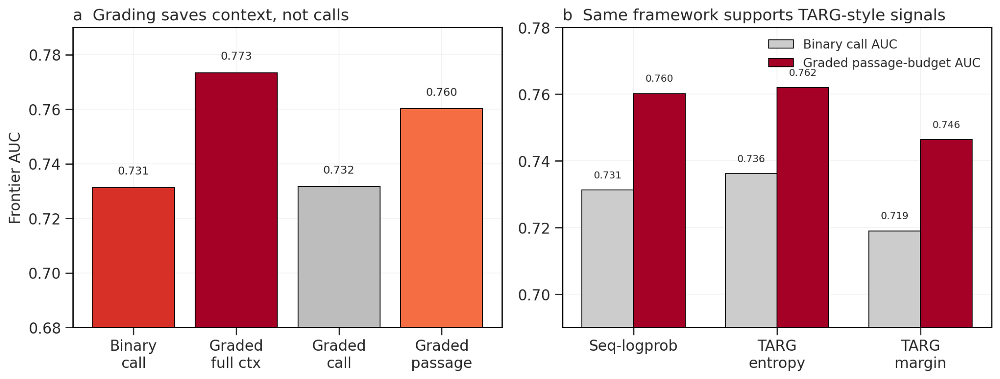
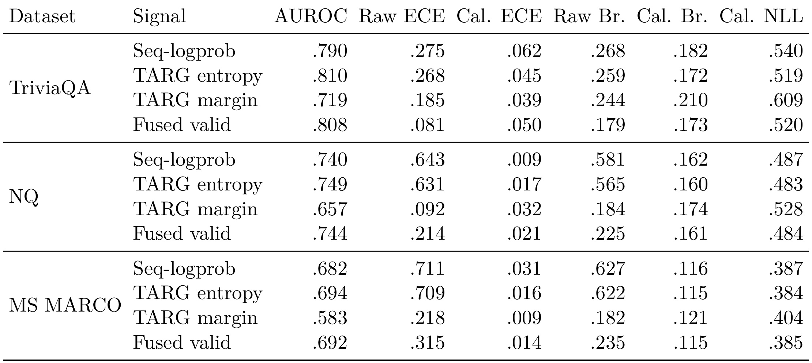
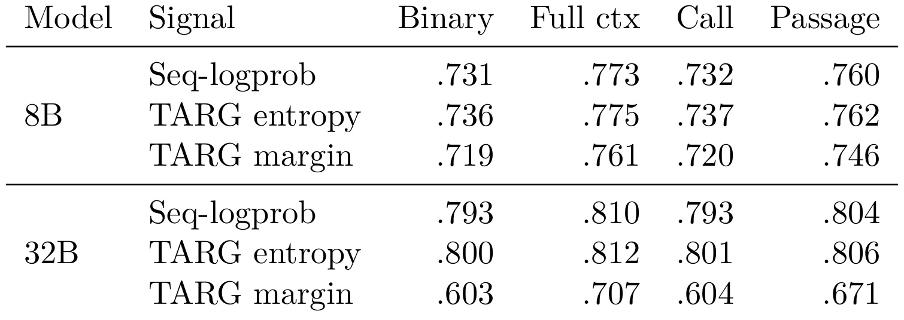
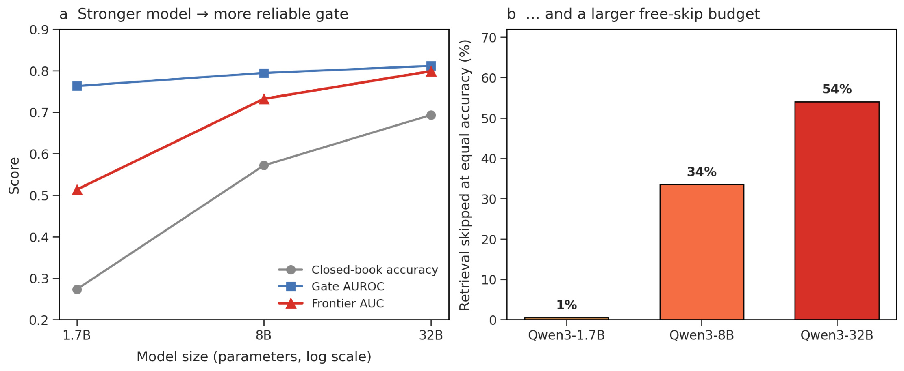
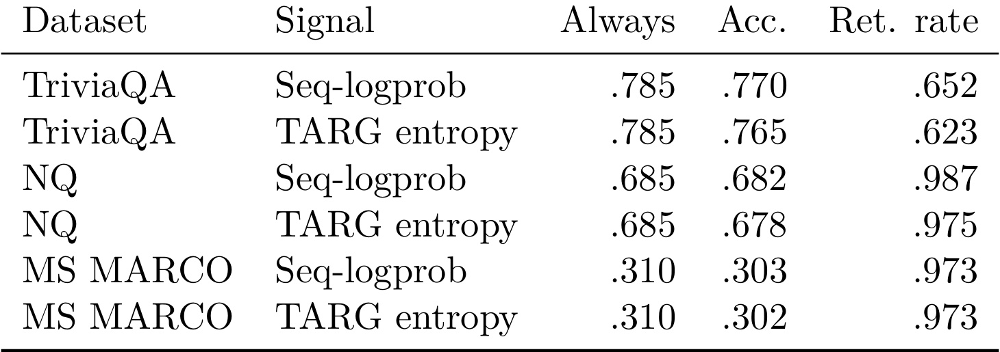
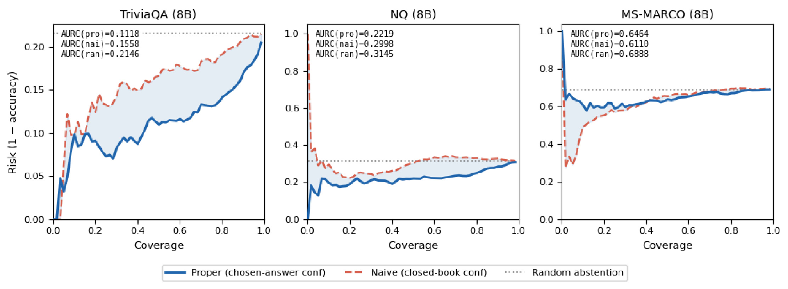
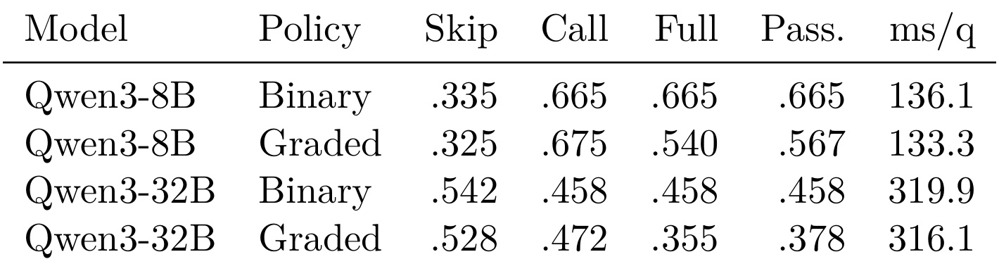
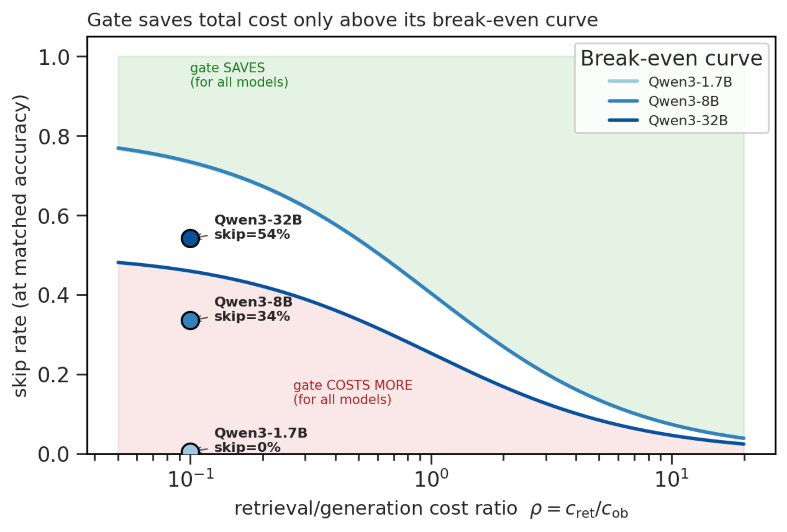
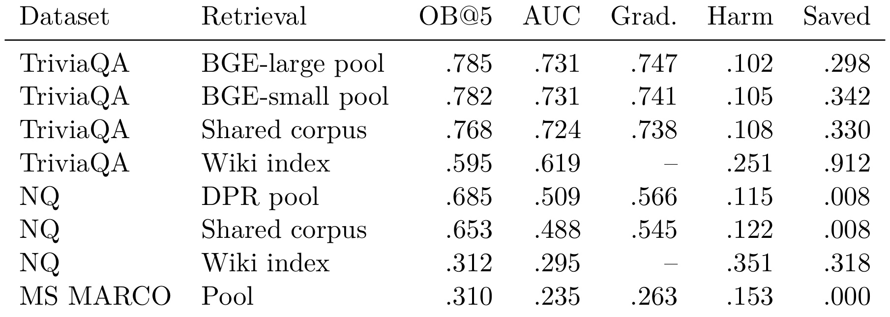
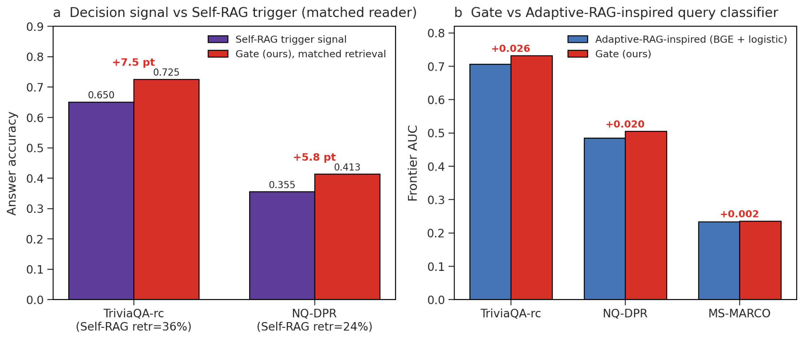

Know Before You Fetch：面向 RAG 的校准检索预算分配
这篇论文讨论的是 RAG 系统里一个很容易被默认参数掩盖的问题：每个问题都检索固定数量的 passages 并不总是合理。论文一作 Zhe Dong 的主机构是 University of Maine at Presque Isle，合作者来自 Stanford University 和 Independent Researcher。唯一论文入口是 arXiv:2606.29959。代码、脚本、prompt、逐查询决策表、标签修正文件和归档 artifact 已核验公开在 GitHub dongzhe1/know-before-you-fetch，Zenodo 归档 DOI 为 10.5281/zenodo.20954595。
固定 top-k RAG 在 reader 已经知道答案时会白白消耗延迟、带宽和上下文 token；而当检索段落无关或只部分相关时，额外证据还可能把原本正确的闭卷答案带偏。因此，高质量 RAG 系统不应只问“要不要检索”，还要问“检索多少、是否应该回答”。
1. 背景和问题
RAG 的默认工程形态往往很朴素：给每个 query 调用 retriever，拿回固定数量的 passages，把它们拼到 prompt 前面，再交给生成式 reader 回答。这个模式稳定、易实现，也让系统获得非参数记忆；但它把所有问题都当成同一种信息需求处理。对于已经在模型参数记忆里、且答案短而明确的问题，检索并不会增加信息量，反而增加一次向量检索、rerank、prompt 拼接和长上下文解码的成本。更麻烦的是，检索不是单调增益：错误实体、同名对象、部分相关段落或过多上下文都可能制造干扰，让 reader 从正确闭卷答案转向错误开放书答案。论文的标题 “Know Before You Fetch” 正是针对这个矛盾：在 fetch 之前，系统应该先估计自己是否真的需要外部证据。
已有 adaptive RAG 方向并不是没有意识到这个问题。Self-RAG 让模型生成 reflection tokens 来决定检索和批判；Adaptive-RAG 试图按问题复杂度路由；FLARE 在生成过程中用 token 置信度触发检索；TARG 则从无上下文 draft 的 prefix-logit 不确定性里做训练无关的 retrieve/skip 判断。这些方法共同说明，检索动作本身应该被决策化，而不是被固定 top-k 写死。不过，这篇论文认为“raw gate”仍然不够。一个 raw uncertainty score 可能能排序：它能说 A query 比 B query 更不确定；但部署系统还需要回答更细的问题：阈值应该设在哪里，跨数据集和 reader 能否比较，低置信时是检索 top-1、检索 top-5，还是直接拒答，节省 passage tokens 是否等同于节省 retrieval call，闭卷探针本身的生成成本是否抵消了跳过检索的收益。raw score 不容易承载这些决策。
论文的核心转向是把 adaptive RAG 表述为 calibrated retrieval-budget allocation。它没有提出新的 reader 或 retriever，也没有训练一个更大的不确定性模型，而是把已有不确定性信号映射成“闭卷答案正确的概率”。这个概率接口有两个好处。第一，它能用验证集阈值选择动作，因此策略不只是按照分数排序，而能在 accuracy、retrieval rate、passage budget、latency 和 abstention 之间做显式权衡。第二，它能兼容不同 raw signals：论文既使用 length-normalized sequence log-probability，也把 TARG-style prefix entropy 和 margin 放进同一校准框架里，说明贡献不是某个单一分数，而是校准后可部署的动作层。
这篇论文属于 LLM/RAG 系统方向，但对推荐系统也有启发。推荐召回链路里也常见固定候选数、固定多路召回配比和固定 rerank 深度；用户请求、场景风险、物料新旧程度和模型置信度不同，却共用一个预算。本文的价值不在于把 QA 结果直接迁移到推荐，而在于提醒我们：预算分配必须和不确定性校准、成本口径、失败边界绑定。如果只说“adaptive retrieval 可以省成本”，而不区分 retrieval call、full context、passage budget 和 reader probe 成本，就可能把系统收益讲得过满。论文后半部分用实验专门纠正这种误读：top-1 compact retrieval 仍然是一次检索调用，闭卷探针也是真实生成成本，只有当跳过比例超过 break-even 条件时，gating 才会真正降低延迟。
从问题定义看，论文要解决的不是“RAG 是否应该检索”这个二分类问题，而是一个多动作预算选择问题。每个 query 可以闭卷回答，可以检索一个紧凑上下文，可以检索五个 passages 的完整上下文，也可以在置信度太低时拒答。这个设定比固定 top-k 更贴近真实系统：有些问题需要证据支撑，有些问题检索只会浪费，有些问题即使检索也不可靠。论文的实验设计因此围绕三个层面展开：先证明校准概率质量足够好，再证明分级预算改善的是 passage/full-context 维度而非 retrieval-call 维度，最后证明成本收益依赖模型规模和系统成本参数，而不是无条件成立。
2. 方法

Figure 1 可以作为方法段落的预算动作图来读：策略并不试图让每个 query 都少调用 retriever，而是在 k=0、k=1、k=5 之间分配上下文预算，所以 full-context 和 passage-budget 会下降，retrieval-call 比例未必同步下降。
2.1 从固定 top-k 到每查询动作表
论文首先把部署问题离线化为每查询 outcome table，而不是直接训练新模型；这让预算策略可以在固定 reader/retriever 的同一批动作结果上被审计。 对每个 query，系统预先记录闭卷答案、top-1 检索后的 open-book 答案、top-5 检索后的 open-book 答案，并分别打上 correctness label。这样一来，策略学习或阈值选择不需要训练 reader 或 retriever，而是在固定 reader/retriever 产生的候选动作上选择部署时应采用哪一个。这个设定让实验能把“决策层是否有效”和“reader/retriever 本身是否更强”拆开，否则一个端到端系统很容易把检索格式、训练数据和答案生成能力混在一起比较。
更具体地说，每个样本包含 query $q_i$、闭卷答案 $a_i^{(0)}$、top-1 答案 $a_i^{(1)}$、top-5 答案 $a_i^{(5)}$，以及标签 $y_i^{(0)}, y_i^{(1)}, y_i^{(5)} \in \{0,1\}$。策略输出的动作不是文本答案，而是预算动作：$k=0$ 代表直接用闭卷答案，$k=1$ 代表取一个 compact context，$k=5$ 代表完整上下文。这个动作表的意义在于，论文评估的是同一个 query 在不同预算下的真实后果，而不是抽象地假设“检索越多越好”。后文 k=10 变差的结果也呼应了这一点：更多 passages 可能引入干扰，而不是线性增加准确率。
2.2 把 raw uncertainty 映射成可比较的正确概率
校准层是全文方法的中心。论文从 frozen reader 的无检索回答开始，取一个 raw signal，例如 length-normalized sequence log-probability。这个分数直觉上反映模型对自己答案的信心，但 raw 值本身不一定等于正确概率，也可能跨数据集、模型、任务不可比较。论文用 logistic calibrator 把它变成闭卷答案正确的概率：
符号解释：$s_i$ 是第 $i$ 个 query 的 raw uncertainty signal，可以是 sequence log-probability、TARG prefix entropy 或 TARG margin；$y_i^{(0)}$ 是闭卷答案是否正确的二值标签；$\alpha$ 和 $\beta$ 是 logistic 校准器参数；$\sigma$ 是 sigmoid 函数；$p_i$ 是校准后的闭卷正确概率。这个公式的作用不是提升 reader 本身，而是把一个排序分数转换成可被阈值、拒答和成本函数共同使用的概率接口。
论文用了两种校准协议。诊断性结果采用 out-of-fold calibration：每个样本都由没有见过它的校准器打分，然后 sweeping thresholds 得到可达到的 frontier。部署性结果采用 train/validation/test split：train 拟合校准器，validation 选阈值，test 只评估一次。这个区分很重要，因为 out-of-fold frontier 展示的是“如果阈值能被充分扫描，策略上限如何”，而验证集阈值实验展示的是“实际部署时只用小验证集选点是否还能接近上限”。论文对 TARG entropy 和 margin 也使用同一套校准协议，目的就是避免把 TARG 当成外部 baseline，而是检查一个强 raw signal 放进概率接口后是否还能受益。
2.3 二阈值分级预算和三条成本轴
最简单的 adaptive policy 是 binary gate：如果闭卷正确概率足够高，就跳过检索；否则直接检索 top-5。论文把它扩展为 graded policy，用两个阈值把动作分成三档。这个引导句很短，但它承接的是本文最核心的动作设计：系统不再把所有低置信 query 都推到同一个 top-5 桶里，而是用概率区间区分“可以不检索”“只需要一个 passage”和“需要完整上下文”三种预算。
符号解释：$a_i$ 是 query $i$ 的预算动作；$p_i$ 是闭卷正确概率；$\tau_0$ 是跳过检索的高置信阈值；$\tau_1$ 是从 compact retrieval 切换到 full retrieval 的低置信阈值。若 $p_i$ 很高，系统直接用闭卷答案；若 $p_i$ 中等，系统检索一个 passage；若 $p_i$ 很低，系统检索五个 passages。这个策略把“不确定”拆成不同程度，而不是把所有低于阈值的 query 都送进同一个 top-5 预算。
为了避免把“省 passage”和“省检索调用”混为一谈，论文定义了三条成本轴。这里的重点不是多写几个指标，而是把部署瓶颈拆开：有的系统贵在 retriever 调用，有的系统贵在长上下文 prefill 和 decode，有的系统贵在 passage 处理或 token 计费；三条轴分别服务这些场景。
符号解释：$x_{\mathrm{call}}$ 是发生检索调用的比例。只要动作是 $k=1$ 或 $k=5$，它都算一次 retrieval call，因此 compact retrieval 不会降低这条轴。这个定义防止读者把 top-1 的 passage 节省误读成检索服务 QPS 节省；如果系统瓶颈在远程检索调用，graded policy 的收益必须另行核算。
符号解释：$x_{\mathrm{full}}$ 是使用完整 top-5 context 的比例。graded policy 的主要收益之一是把一部分原本 top-5 的 query 改成 top-1，从而降低满上下文使用率。这个指标更接近长上下文 reader 的 prefill 压力，也更能反映 prompt 过长带来的干扰风险。
符号解释：$x_{\mathrm{passage}}$ 是归一化 passage budget，分子把 top-1 和 top-5 的 passage 数加权，分母用 always top-5 归一化。它能表达 context token 或 passage 处理成本，但不能代表检索系统调用次数。论文后续 Figure 1 和 Table 2 的主要结论正建立在这个区分上：graded allocation 可以显著改善 full-context 和 passage-budget frontier，却几乎不改善 retrieval-call frontier。
2.4 拒答、答案置信度和真实延迟成本
Selective RAG 在预算动作之外再加入 abstain。论文没有简单沿用闭卷置信度，而是使用系统最终返回答案的置信度：如果策略选择跳过检索，就用闭卷答案校准概率；如果策略选择检索，则用选中 open-book 答案的 length-normalized sequence log-probability 再做 logistic calibration。这样得到的 chosen-answer confidence 更贴近系统真正要交付的答案，而不是只衡量闭卷回答。按这个置信度排序后，可以画 risk-coverage curve：覆盖率越低，系统回答的问题越少；如果置信度有用，被剔除的应该优先是错误样本，曲线的风险会下降。
成本模型则把“闭卷探针不是免费”写进公式。Always-RAG 的成本是 top-5 检索和 open-book 生成之和；binary gate 必须先做一次闭卷生成，再按概率进入 top-5。这个设定把很多 adaptive RAG 叙事里被省略的前置成本显式化：如果闭卷 probe 不能被直接复用为最终答案，或者 probe 本身的 decode 很慢，那么跳过检索的比例必须足够高才有收益。
符号解释：$C_{\mathrm{binary}}$ 是 binary gate 的期望成本；$c_{\mathrm{CB}}$ 是闭卷探针成本；$p_5$ 是选择 top-5 检索的比例；$c_{\mathrm{ret},5}$ 是 top-5 检索成本；$c_{\mathrm{OB},5}$ 是带 top-5 context 的 open-book 生成成本。这个式子说明，只要策略没有跳过足够多的 query，额外闭卷探针可能会让系统变慢。
由此得到 binary gating 真正更快的 break-even 条件。这个条件把“高置信跳过”转换成一个可以上线前测量的工程门槛：先测闭卷 probe 的平均成本，再测 always-RAG 的检索与 open-book 生成成本，最后检查验证集上的 skip rate 是否超过该门槛。
符号解释：$\Pr(k=0)$ 是跳过检索的比例；右侧是闭卷探针成本占 always-RAG 成本的比例。只有跳过比例超过这个值，省下的检索和 open-book 生成成本才足以覆盖探针开销。论文用这个条件解释为什么 Qwen3-8B 上 gating 反而变慢，而 Qwen3-32B 上可能变快：更强模型能安全跳过更多 query，越容易跨过 break-even 线。
对于 graded gate，top-1 和 top-5 要分别计费。原因是 compact retrieval 只节省 passage 和上下文长度，不一定节省检索调用；如果 top-1 和 top-5 的检索服务成本相近，graded policy 的收益会主要体现在 reader 侧，而不是 retriever 侧。
符号解释：$p_1$ 和 $p_5$ 分别是选择 compact retrieval 和 full retrieval 的比例；$c_{\mathrm{ret},1}, c_{\mathrm{OB},1}$ 是 top-1 检索与生成成本；$c_{\mathrm{ret},5}, c_{\mathrm{OB},5}$ 是 top-5 成本。这个式子把 graded policy 的优势和边界都讲清楚：它能减少 context 和 passage 成本，但只要 $p_1$ 仍然较高，retrieval-call 成本不会自然消失。
3. 实验结果
3.1 校准质量：概率接口先要可信
实验主线先证明校准确实改变了 probability quality。论文在 TriviaQA、Natural Questions 和 MS MARCO 上使用 Qwen3-8B，比较 sequence log-probability、TARG entropy、TARG margin 和 fused valid 这些信号。评价指标包括 AUROC、ECE、Brier score 和 NLL。AUROC 衡量排序能力，ECE、Brier 和 NLL 衡量概率是否可信。这个顺序安排很合理：如果 raw score 只能排序但概率很差，那么后续阈值、拒答和成本选择都没有稳定基础。

从 Table 1 可以读到，sequence log-probability 的 raw ECE 在三个数据集上非常差：TriviaQA 为 0.275，NQ 为 0.643，MS MARCO 为 0.711；经过 out-of-fold logistic calibration 后，分别降到 0.062、0.009 和 0.031。这个变化说明 raw score 虽然可能保留排序信息，但它原本不是一个可直接拿来设阈值的概率。TARG entropy 的 AUROC 在 TriviaQA 和 NQ 上略强于 seq-logprob，同时校准后 ECE 也能降到 0.045、0.017 和 0.016。TARG margin 的 raw ECE 在一些数据集上看起来没那么极端，但 AUROC 较弱，尤其 MS MARCO 只有 0.583。Fused valid 的表现则显示简单融合并不自动支配单一强信号。论文由此得到的结论比较克制：校准不是为了创造一个全场最强 raw signal，而是为了让不同 raw signals 都能进入同一个概率决策接口。
这张表还暗示了数据集差异。MS MARCO 的 raw ECE 特别高，且作者在 Evaluation 部分说明其答案语义更多样、噪声更大，因此它更像低 headroom 边界集，而不是证明方法最强的场景。NQ 的 calibrated ECE 很低，但后续阈值实验显示它仍然接近 always retrieval，因为闭卷准确率低、open-book headroom 大。换句话说，概率校准只是让系统更会判断风险，并不保证每个数据集都有大量可以跳过的检索。一个低闭卷能力或低检索收益的任务，仍然会让策略选择保守动作。
3.2 分级预算：三条成本轴不能混为一谈
论文最有价值的实验之一，是把 retrieval-call、full-context 和 passage-budget 三条轴分开。很多 adaptive retrieval 论文会说“减少检索预算”，但没有说明减少的是调用次数、passage 数、full-context 使用率，还是总延迟。本文用 Figure 1 和 Table 2 明确指出：graded policy 的收益主要在 full context 和 passage budget；如果 top-1 仍然要调用 retriever，那么 retrieval-call AUC 不会显著变好。
Figure 1 左侧的柱状图把 Seq-logprob 在 TriviaQA-8B 上的四个 frontier AUC 摆在一起：binary call 为 0.731，graded full-context 到 0.773，graded call 只有 0.732，graded passage 为 0.760。这里的差异非常清楚：分级策略确实能把一部分 query 从 top-5 降到 top-1，因此 full-context 和 passage 预算上有更好 frontier；但 top-1 仍然需要检索调用，所以 call 轴几乎不动。右侧 panel 把同一框架应用到 TARG-style 信号，TARG entropy 的 binary call AUC 为 0.736，graded passage-budget AUC 为 0.762；TARG margin 也从 0.719 提到 0.746。这个结果说明本文不是在否定 TARG，相反是在说强 raw signal 放入分级校准层后，仍然能获得 passage-budget 层面的收益。

Table 2 给出更精确的数值，也帮助我们判断收益规模。8B 上，Seq-logprob 从 binary 0.731 到 full ctx 0.773，passage 0.760；TARG entropy 从 0.736 到 full ctx 0.775，passage 0.762；TARG margin 的 full ctx 0.761、passage 0.746。32B 上也有同样方向，但增量更小，例如 Seq-logprob full ctx 0.810、passage 0.804，而 call 仍是 0.793。这和直觉一致：更大 reader 的闭卷能力更强，已有 gating 排序更稳，graded policy 的额外空间可能被压缩；但它仍然在 passage/full context 维度发挥作用。需要注意的是，call 列几乎总是贴着 binary 值，这不是坏结果，而是作者有意强调的 accounting correction：compact retrieval 不是 free call。
这个实验对工程落地尤其重要。如果系统瓶颈是检索服务 QPS 或网络往返，那么 top-1 与 top-5 都可能一样昂贵，graded policy 未必帮得上忙；如果瓶颈是 prompt token、reader context 长度、cross-attention 或长上下文解码，那么 top-1 会显著减轻成本。论文没有把所有成本混写成一个“效率提升”，而是让读者先判断自己的系统瓶颈属于哪一类。这种拆分比单纯报告平均 retrieval rate 更可信。
3.3 部署阈值和模型规模
规模实验回答另一个问题：什么时候能安全跳过检索？论文在 TriviaQA 上比较 Qwen3-1.7B、8B 和 32B。随着 reader 变强，closed-book accuracy 从 0.273 到 0.693，gate AUROC 和 frontier AUC 也变好；为了匹配 always-RAG accuracy，需要检索的比例从接近 100% 下降到 46%，也就是 32B 能跳过约 54% 的 query。

Figure 2 左侧把 closed-book accuracy、gate AUROC 和 frontier AUC 放在同一图里，能看出三者不是完全等价。closed-book accuracy 是模型直接回答的能力，gate AUROC 是不确定性信号排序 query 的能力，frontier AUC 则是排序能力与 open-book rescue headroom 的组合结果。右侧柱状图最直观：1.7B 几乎没有 free-skip budget，8B 约 34%，32B 约 54%。这说明 adaptive RAG 并不是越小模型越适合。小模型可能更需要检索救援，闭卷探针也更不可靠；大模型才更可能“知道自己知道”，从而在高置信 query 上跳过检索。

Table 3 从 diagnostic frontier 走向部署口径。TriviaQA 上，Seq-logprob 的 always accuracy 是 0.785，验证集阈值选出的 test accuracy 为 0.770，retrieval rate 为 0.652；TARG entropy 的 retrieval rate 为 0.623，accuracy 为 0.765。也就是说，在接近 always-RAG 的准确率下，TriviaQA 可以少检索约三分之一 query。NQ 和 MS MARCO 完全不同：NQ 的 retrieval rate 达到 0.987 或 0.975，MS MARCO 为 0.973。这不是方法失败，而是策略做出了符合任务条件的保守选择：当闭卷 headroom 很低或答案语义噪声更大时，校准概率不应该强行跳过检索。
这里有一个值得保留的判断：论文把“低 skip rate”解释成正常行为，而不是为了讲效率强行调阈值。很多系统论文容易用 oracle threshold 或单数据集结果讲节省，但本文把验证集阈值和 test 一次评估写出来，避免把曲线上最漂亮的点当成部署承诺。对真实 RAG 服务来说，这个做法更接近上线流程：先在小验证集上决定 accuracy 损失容忍度和 retrieval budget，再把阈值固定后测试。
3.4 选择性回答：把检索动作和拒答动作合并看
Selective RAG 部分把预算分配扩展到 abstention。论文没有只问“回答时用不用检索”，还问“这次是否应该回答”。关键技术点是 chosen-answer confidence：如果系统选择闭卷，就用闭卷答案校准概率；如果系统选择检索，就校准选中 open-book 答案的 log-probability。这样排序的是最终答案的可信度，而不是仅仅排序闭卷探针。

Figure 4 分别展示 TriviaQA、NQ 和 MS MARCO 的 risk-coverage 曲线。蓝线 proper confidence 在 TriviaQA 和 NQ 上明显优于红色 naive closed-book confidence 和灰色 random abstention。论文正文给出 80% coverage 下的数值：TriviaQA accuracy 从 naive 的 80.8% 提到 proper 的 86.0%，NQ 从 66.9% 提到 75.0%。这说明一旦系统已经可能选择 open-book answer，再用闭卷信心衡量最终答案就会错位；真正应该排序的是“被返回答案”的置信度。MS MARCO 是一个边界情况：proper confidence 虽然好过 random，但没有稳定压过 naive closed-book confidence，作者把原因指向低 headroom 和更嘈杂的答案语义。这个负例很重要，因为它提醒读者：校准接口不是跨任务保真的万能拒答器。
从产品角度看，selective abstention 比单纯 skip/retrieve 更接近高风险 RAG 服务。很多问答系统在无法确认答案时应该拒答或请求更多证据，而不是在低置信时盲目检索 top-5 后继续生成。本文的实现仍然比较简单，只在短答案 QA 上做 risk-coverage；但它提供了一个统一视角：retrieval 是一种信息获取动作，abstention 是一种预测动作边界。二者都可以由校准概率驱动，只是需要为最终选择的答案重新估计置信度。
3.5 成本实验：闭卷探针不是免费前置步骤
论文最克制也最有工程价值的部分，是 measured cost regimes。很多人会自然认为“先闭卷试答，高置信就不检索”一定更快，但本文直接测量 Qwen3-8B 和 Qwen3-32B 后发现并非如此。闭卷探针是一整次生成，如果模型不够强、能跳过的 query 不够多，探针成本会压过节省收益。

Table 4 显示，在 TriviaQA oracle matched-accuracy operating point 上，Qwen3-8B always-RAG 是 107.5 ms/q；binary gating 变成 136.1 ms/q，graded gating 是 133.3 ms/q。虽然它能跳过约 32.5%-33.5% 的 query，但闭卷探针成本仍使总延迟增加。Qwen3-32B 则相反：always-RAG 为 346.5 ms/q，binary 和 graded gating 分别为 319.9 和 316.1 ms/q。原因不是 graded 策略神奇，而是更大模型有更高的安全 skip rate，且 always-RAG 的 open-book 生成成本更高，跳过一部分 full context 足以抵消探针成本。表中的 Full 和 Pass. 列也说明 graded gating 的细分价值：32B graded 的 Full 为 0.355，Pass. 为 0.378，低于 binary 的 0.458，但 Call 仍有 0.472。

Figure 5 把 Equation 7 画成成本区域。横轴是检索/生成成本比 $\rho=c_{ret}/c_{OB}$，纵轴是在匹配 accuracy 下的 skip rate。曲线之上是 gate saves，曲线之下是 gate costs more。三个模型对应的点位揭示了 Table 4 的机制：Qwen3-1.7B 几乎不能跳过，必然落在成本更高区；Qwen3-8B 的 skip 约 34%，在图中仍未越过相应曲线；Qwen3-32B 的 skip 约 54%，跨到节省区域。这个图对部署者的启发很直接：不要只拿论文里的平均延迟；先测自己的 closed-book probe cost、retrieval cost、open-book generation cost，再看跳过比例是否超过 break-even。
这也解释了为什么论文反复区分 cost axes。假如你的检索服务很便宜但 reader 长上下文很贵，passage-budget 改善可能带来明显收益；假如检索调用是跨机房瓶颈而 top-1/top-5 调用成本接近，graded policy 的收益会缩水；假如 closed-book probe 可以复用为最终答案，成本模型又会不同。本文没有替所有部署形态给出唯一结论，而是把成本公式和测量表交给读者。这个态度比“adaptive RAG reduces latency”更稳健。
3.6 放大样本与鲁棒性
Additional analyses 继续检查主结论是否受样本数、检索器质量和语料规模影响。Table 5 在 n=2000 的 Qwen3-8B 设置下验证 passage-budget 轴的结论：TriviaQA 的 closed-book 为 0.541，OB@5 为 0.842，AUROC 0.810，binary 0.754，graded 0.792；NQ 的 closed-book 更低但 open-book 改善明显；MS MARCO 的 headroom 很小。论文没有把 Table 5 放成主图，但它说明主结论不是小样本偶然波动。

Table 6 更值得细读。TriviaQA 在 BGE-large pool、BGE-small pool、shared corpus 三种设置下 OB@5 仍在 0.768-0.785，AUC 和 graded 值也比较稳定；但切到 3.5M passage 的 Wiki index 后，OB@5 降到 0.595，harm 升到 0.251，saved 达到 0.912。NQ 的 Wiki index 更严峻，OB@5 只有 0.312，AUC 0.295，harm 0.351。这个结果有两层含义。第一，校准信心确实能识别一部分“检索会伤害闭卷正确答案”的场景，所以 saved 在某些压力设置下很高。第二，如果 retriever 本身把好证据拿不到，confidence gate 不能凭空修复 open-book accuracy；它最多决定什么时候避免伤害或少浪费预算。对真实 RAG 来说，预算分配层不能替代检索质量治理。
论文还讨论了“为什么不检索更多”。TriviaQA 上 k=10 反而比 k=5 差：Qwen3-8B 从 0.785 降到 0.730，Qwen3-32B 从 0.822 降到 0.760，且大约 8.5% 的 k=5 正确样本在 k=10 变错。这一结果与 Table 6 的 harm 概念一致：更多 context 不只是成本问题，也可能是质量风险。对需要长文证据或多 hop 推理的任务，结论可能不同；但至少在这些短答案 QA 任务中，固定加大 k 并不是安全策略。
3.7 与决策信号基线的边界比较
论文还把自己的 gate 与 Self-RAG trigger signal、Adaptive-RAG-inspired query classifier 做了 matched-reader 比较。作者特别说明，这不是完整 Self-RAG 或 Adaptive-RAG pipeline 的复现，而是把各类决策信号放在同一个 reader table 上比较 retrieve/skip 质量。这个设定比较保守，也避免把 reader fine-tuning、检索格式和答案生成差异混入决策信号对比。

Figure 6 左侧显示，在 matched reader 下，本文 gate 相比 Self-RAG trigger signal 在 TriviaQA-rc 上 answer accuracy 高 7.5 pt，在 NQ-DPR 上高 5.8 pt。右侧与 Adaptive-RAG-inspired query classifier 比，TriviaQA-rc frontier AUC 提高 0.026，NQ-DPR 提高 0.020，MS MARCO 只提高 0.002。这个结果的正确读法不是“本文系统击败 Self-RAG/Adaptive-RAG”，而是“在同一 reader 和预计算动作表上，校准信心信号是一个更强的预算决策接口”。MS MARCO 的微小增益再次说明，低 headroom 或噪声语义场景下，决策层能挖出的空间有限。
综合实验部分，可以把本文证据链压缩成四句话。第一，raw uncertainty 需要校准，ECE 的改善幅度足以支撑概率接口。第二，graded allocation 的收益在 passage/full-context budget，而不是 retrieval-call budget。第三，模型越强、闭卷 headroom 越高，安全 skip 空间越大；但验证集阈值会在 NQ/MS MARCO 上自动选择近乎 always retrieval。第四，成本收益不是无条件的，闭卷探针成本、检索成本和 open-book 生成成本共同决定 gating 是否值得上线。
4. 总结
4.1 我的判断
这篇论文的贡献不是提出一个复杂新模型，而是把 RAG 预算决策从“经验 top-k 参数”推进到“可校准、可计费、可拒答的概率接口”。它的技术含量主要体现在问题拆分和评估口径，而不是神经网络结构。对工程系统而言，这反而更有价值：如果已有 reader、retriever 和日志标签，最先能落地的常常不是重新训练端到端 RAG，而是在固定系统上估计 query-level correctness probability，再用验证集阈值控制预算。论文对 TARG-style signals 的处理也比较聪明，它没有把 TARG 当成被打败的对象，而是说明强 raw signal 经过校准后仍可用于 graded allocation。
我最认可的是作者对效率叙事的克制。很多 adaptive RAG 方案容易把“少传 passages”讲成“少检索、少延迟、少成本”，但本文明确指出三者不是同一件事。top-1 仍然是 retrieval call，闭卷 probe 也是 generation pass，只有跳过比例超过 break-even 条件时，系统延迟才下降。这种 accounting correction 对生产系统尤其关键，因为成本瓶颈可能在向量召回、rerank、LLM prefill、decode、网络调用或计费 token 中任何一个环节。
4.2 局限与风险
第一，实验主要是短答案 QA，correctness 可以用 alias 和字符串规范化来判断。长文 RAG、带引用答案、多证据综合或开放式解释任务需要更复杂的 factuality 和 attribution 评估，校准的目标也不再只是 answer correct。第二，测得的 latency 是 batch-1 和特定硬件/实现下的结果；生产批处理、异步检索、KV cache 复用、speculative decoding 或检索缓存都会改变 Equation 7 的右侧阈值。第三，比较 Self-RAG 和 Adaptive-RAG 时只是 matched-reader decision-signal 视角，不代表完整 pipeline 性能；如果对方系统通过训练改变 reader 行为，结论不能直接外推。第四，校准会发生 domain shift。一个在 TriviaQA 或 NQ 上校准好的阈值，不应直接用到医疗、金融、内部知识库或实时新闻问答。第五，拒答策略可能造成用户群体或主题上的 coverage 差异，高置信不等于合规可回答，高风险场景仍可能必须检索证据。
4.3 工程启发与后续跟进
后续如果要把这类方法放进真实 RAG，可以先做三件事。第一，离线构建每查询动作表：记录闭卷、top-1、top-5 或更多预算下的答案、正确性、延迟、token、retrieval hit、harm cases，再用 out-of-fold 方式评估校准质量。第二，不要只选一个 retrieval rate 指标，而要同时报告 call rate、full-context rate、passage budget、P95 latency 和最终答案正确率；只有这样才能判断 graded policy 省的是哪类成本。第三，校准阈值必须按模型、数据域和检索器版本单独维护，并监控 ECE、abstention rate、用户主题分布和错误样本漂移。
我还会重点跟进三个方向。一个是把 chosen-answer confidence 扩展到带引用的 long-form RAG，让置信度不仅判断答案字符串正确，还判断证据是否充分、引用是否支持结论。第二个是把 cost model 做成在线多目标优化：不同用户场景可以选择低延迟、高准确、高引用覆盖或低 token 成本，而不是共用一组阈值。第三个是和检索质量诊断结合，区分“模型知道答案所以跳过”“检索器拿不到证据所以应改检索”“问题高风险所以必须检索”这三类状态。本文已经把 RAG 从固定 top-k 往预算决策推进了一步，但真正上线时，校准概率必须和安全策略、证据要求、检索器健康度一起治理。